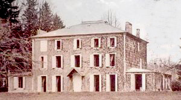
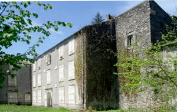
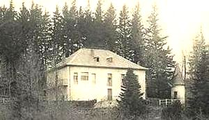
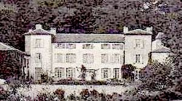
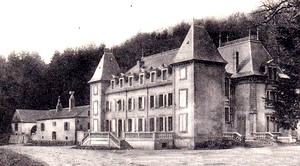
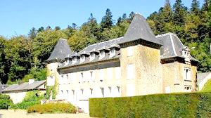
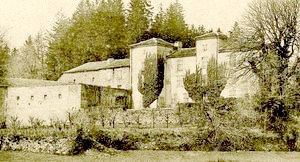

Recensement Jean-Claude Truffet
| Département | 81 — Tarn |
| Canton | Anglès |
| Commune | Anglès_du_Tarn |
| Type d'édifice | Château |
| Période d'origine | XV |







Plusieurs châteaux à Anglès du Tarn, de Boutaric, de Campan du XIe-XVIIe siècle (voir article ), de Cors, de Ginestous, de Larembergue, de Lasfaillades et de Redondet du XVI-XIXe siècle. BOUTARIC; pas d'information historique. CORS, le domaine est une donation de madame Nonez-Lopez à une association qui s'occupe de l'enfance. Cette propriété est rentrée dans le patrimoine de l'AEP en 2000. Le projet se présente en trois volets sur 6 ans en faisant travailler les artisans locaux et en partenariat avec les collectivités locales. Le volet social avec l'organisation de séjour pour les enfants. Le second volet est la formation en partenariat avec le lycée forestier du haut Languedoc et le lycée du bois et de l'ameublement de Revel. Le troisième volet est touristique avec l'organisation de classe verte et de séminaires. GINESTOUS pas d'information historique. LAREMBERQUE en société de Jacques François pas d'autre information. REDONDET En 1567, le lieutenant du vicomte de Paulin, chef des protestants, était Jacques de La Roque, propriétaire du Redondet. Durant tout le XVIIIe siècle, on continue de rencontrer au Redondet, les La Roque, né en 1770, Paul de La Roque d'Oulès suivit les autres officiers de son régiment en émigration, tandis que son propre frère Jean-Louis se rangea aux côtés des républicains. En 1832, on trouve Paul de La Roque d'Oulès, qui en fait était rentré très vite de son émigration et avait vécu caché durant les heures sombres de la Terreur. LASFAILLADES est un village qui a son chef-lieu au hameau du Bouisset. Là, se trouvent la mairie, le cimetière et l'église dédiée à Notre-Dame des Neiges devenue paroisse le 17 septembre 1877. répartis en plusieurs hameaux ou lieux-dits , la communauté dépendait de la sénéchaussée et du diocèse de Castres.A l'origine, la municipalité faisait partie du canton de Brassac mais en 1846, elle passe au canton d'Anglès. L'orthographe de la commune a évolué au fil des ans : Lasfaillades, Les Feuillades, Les Faillades pour ne conserver que la première appellation de nos jours. C'est le pays de la montagne, des forêts et de l'eau vive avec le lac des Saints-Peyres qui se trouve à proximité. La verdure et la fraîcheur mettent une note de calme et de bien-être.
A Anglès l'ancienne porte de la ville dite le Portail Bas, construite au XVIIe siècle a été inscrite monument historique le 19 octobre 1927.
Le château de Campan dont la fondation date du XIe siècle. Il présente une façade sud embellie au XVIIe siècle. Il est inscrit au monument historique par arrêté du 17 mai 1961. Cors, la réfection de la toiture du XVIe siècle du château pour le mettre hors eau, le nettoyage des abords des bâtiments par les élèves du lycée forestier et la réhabilitation de l'ancienne bergerie en structure d'accueil, une salle commune, à l'étage les sanitaires et plus tard une salle de conférences et de projection. Les autres bâtiments seront presque tous conservés comme la maison du gardien qui accueillera par la suite un couple assurant l'entretien et le gardiennage du site. Cette façade se compose d'un pavillon central non saillant flanqué d'ailes latérales plus basses et à gauche de cette solide composition vient s'appuyer une imposante tour carrée de la même hauteur que le pavillon central. A gauche de cette tour d'autres corps de bâtiment. Bien qu'une grande partie des différents corps de logis du Redondet soit de fondation très ancienne, notamment la grosse tour carrée, il est évident qu'il a reçu des remaniements et trouvé son ordonnance régulière aux XVIIIe et XIXe siècles.
Madame Nonez-Lopez Famille de Paul de La Roque d'Oulès
"
A Anglès, plusieurs châteaux, de Boutaric, de Campan , de Cors, de Ginestous, de Larembergue, de Lasfaillades et de Redondet.